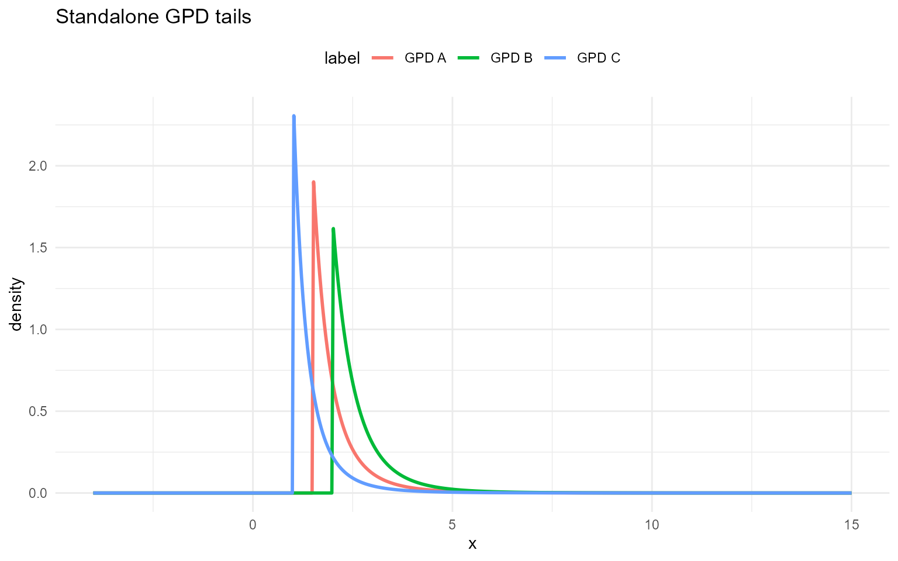

Introduction with GPD kernel
Source:vignettes/website/kernels/introduction-with-gpd-kernel.Rmd
introduction-with-gpd-kernel.RmdIntroduction with GPD kernel
Generalized Pareto distribution (standalone tail)
The standalone GPD functions dGpd, pGpd,
qGpd, and rGpd implement the distribution of
above a threshold
.
For
,
the density is
The CDF is and the quantile is with the exponential-limit case obtained as .
Parameter mapping (math
code):
threshold,
scale,
shape. Log-densities are returned when
log = TRUE.
We show the DPmixGPD kernels in pairs: bulk-only and GPD-augmented. A GPD tail above threshold uses
The standalone GPD tail distribution is available via
dGpd, pGpd, qGpd, and
rGpd functions.
dGpd(1.8, threshold = 1.5, scale = 0.5, shape = 0.2)[1] 1.01
dGpd(1.8, threshold = 1.5, scale = 0.5, shape = 0.2, log = TRUE)[1] 0.0132
pGpd(1.8, threshold = 1.5, scale = 0.5, shape = 0.2)[1] 0.433
pGpd(1.8, threshold = 1.5, scale = 0.5, shape = 0.2, lower.tail = FALSE)[1] 0.567
pGpd(1.8, threshold = 1.5, scale = 0.5, shape = 0.2, log.p = TRUE)[1] -0.838
q_vec(qGpd, c(0.25, 0.5, 0.75), threshold = 1.5, scale = 0.5, shape = 0.2)[1] 1.65 1.87 2.30
q_vec(qGpd, c(0.25, 0.5, 0.75), threshold = 1.5, scale = 0.5, shape = 0.2,
lower.tail = FALSE)[1] 2.30 1.87 1.65
q_vec(qGpd, c(log(0.25), log(0.5), log(0.75)), threshold = 1.5, scale = 0.5,
shape = 0.2, log.p = TRUE)[1] 1.65 1.87 2.30
draw_many(rGpd, list(threshold = 1.5, scale = 0.5, shape = 0.2))[1] 1.66 1.74 1.96 3.03 1.62
grid <- seq(-4, 15, length.out = 500)
gpd_sets <- list(
list(label = "GPD A", threshold = 1.5, tail_scale = 0.5, tail_shape = 0.2),
list(label = "GPD B", threshold = 2.0, tail_scale = 0.6, tail_shape = 0.15),
list(label = "GPD C", threshold = 1.0, tail_scale = 0.4, tail_shape = 0.25)
)
df_gpd <- do.call(rbind, lapply(gpd_sets, function(ps) {
data.frame(x = grid, density = density_curve(grid, dGpd, list(threshold = ps$threshold, scale = ps$tail_scale, shape = ps$tail_shape)), label = ps$label)
}))
ggplot(df_gpd, aes(x = x, y = density, color = label)) +
geom_line(linewidth = 1) +
labs(title = "Standalone GPD tails", x = "x", y = "density") +
theme_minimal() + theme(legend.position = "top")
Each subsection below defines the available functions, prints example outputs for fixed parameters, and overlays density curves for three parameter sets with clear legends. The same parameter sets are reused within the bulk and GPD variants of a section.